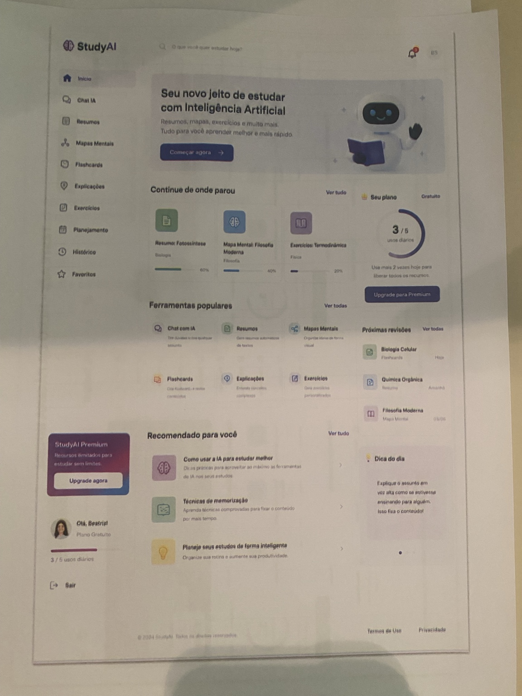

Projeto final · UX Research Sprint
StudyAI — UX Research Sprint
Investigação sobre retenção, adesão e percepção de valor em uma plataforma de estudos com Inteligência Artificial.
Cadastros
5.000
em 3 meses
Retorno
30%
após 1º acesso
Abandono
60%
na 1ª semana
Conversão
<5%
assinatura paga
01 · Contexto
Uma EdTech com muitas ferramentas, mas com baixa continuidade de uso.
A StudyAI é uma plataforma de Inteligência Artificial voltada para estudantes, oferecendo recursos como resumos automáticos, explicação de conteúdos, criação de mapas mentais, flashcards e planejamento de estudos.
Apesar do alto volume de cadastros, os dados indicam dificuldade em manter os usuários ativos e converter o interesse inicial em uso contínuo.
02 · Problema central
Retenção e adesão estão abaixo do potencial da plataforma.
A StudyAI apresenta um problema de retenção e adesão. Apesar de ter alcançado cerca de 5 mil cadastros nos três primeiros meses, apenas 30% dos usuários retornam à plataforma, enquanto 60% abandonam a experiência ainda na primeira semana. Além disso, a taxa de assinatura paga é inferior a 5%.
Diagnóstico síntese
A plataforma atrai usuários para o cadastro, mas não consegue convertê-los em usuários ativos.
Problema de retenção
O usuário até entra na plataforma, mas não cria hábito nem retorna com frequência após a primeira experiência.
Problema de adesão
A percepção de valor não é forte o suficiente para sustentar o uso contínuo ou justificar o plano premium.
03 · Evidência visual
A interface como evidência do diagnóstico de UX.
O painel inicial foi analisado como evidência visual para entender onde a experiência pode gerar clareza, valor ou fricção.

Insira aqui a imagem da interface da StudyAI
04 · Mapa de calor
O menu lateral concentra carga cognitiva e pontos de decisão.
A sobreposição abaixo destaca as áreas mais críticas da tela. O foco principal está no menu lateral, onde muitas ferramentas aparecem isoladas e sem agrupamento por objetivo de estudo.
Insira aqui a imagem da interface da StudyAI
06 · Diagnóstico de UX
O painel é visualmente promissor, mas ainda não orienta uma jornada clara.
Pontos positivos
- Interface visualmente limpa
- Várias ferramentas de estudo
- Continuidade de atividades
- Cards de progresso
- Incentivo ao uso diário
- Elementos de gamificação
- CTA para premium
- Recomendações personalizadas
Pontos críticos
- Menu extenso e pouco orientado
- Plano gratuito com limitação pouco contextualizada
- CTA premium antes da percepção de valor
- Pouca conexão entre ferramentas
- Ausência de trilha clara de estudo
- Risco de uso solto e abandono
- Falta de agrupamento por jornada
- Baixa orientação para iniciantes
07 · Causas possíveis
O abandono pode surgir da soma entre fricção, baixa orientação e valor pouco percebido.
08 · Hipóteses
Hipóteses de retenção e adesão.
Barreira do plano gratuito
Os recursos disponíveis na modalidade gratuita limitam a exploração e impedem que o usuário compreenda o valor antes de assinar.
Ferramentas isoladas
As ferramentas não se conectam por tema de estudo, fragmentando a jornada e gerando frustração.
Respostas superficiais
As respostas da IA parecem genéricas, reduzindo a segurança do usuário para continuar.
Menu sem orientação
O usuário abandona porque não entende qual ferramenta usar primeiro.
Premium antes do valor
O CTA premium aparece antes de a plataforma demonstrar valor suficiente.
Baixa percepção de progresso
O usuário não percebe evolução real ao longo da semana, reduzindo o hábito de retorno.
09 · Dados e estatística
Os dados mostram utilidade moderada e necessidade de refinamento.
Respostas atendem às expectativas?
Profundidade percebida
4, 5, 6, 5, 7, 4, 6, 5, 5, 4
Moda5
Média5,1
Mediana5
Quantidade de refinamentos
0, 2, 3, 1, 4, 2, 3, 1, 2, 3
Moda2 e 3
Média2,1
Mediana2
Interpretação
A média de profundidade em 5,1 mostra avaliação intermediária. A média de 2,1 refinamentos indica que os usuários precisam insistir para obter respostas mais úteis.
10 · Mapa de afinidade
10 insights organizados por padrões de comportamento e fricção.
Falta de profundidade gera desconfiança
68% avaliam entre “às vezes” e “raramente” que a IA não oferece profundidade suficiente.
Quando a IA não aprofunda, o usuário perde confiança.Repetição leva ao abandono
Usuários precisam perguntar mais de 2 vezes e depois tendem a abandonar.
Múltiplas tentativas aumentam a frustração.Pedidos sem orientação
O usuário precisa refazer perguntas para obter algo mais útil.
A plataforma não orienta bons pedidos.Resposta útil exige esforço
É necessário pedir detalhes várias vezes.
Obter utilidade exige esforço adicional.Melhor em temas gerais
Em assuntos específicos, há falta de profundidade.
A IA perde qualidade sem contexto.Plano gratuito limita exploração
A modalidade gratuita limita recursos e uso das funcionalidades.
Barreiras dificultam a descoberta de valor.Ferramentas fragmentadas
As ferramentas não se conectam por tema de estudo.
A falta de integração gera fricção.Valor irregular
Somente 12% dizem que sempre atende; 48% dizem que só às vezes.
A proposta de valor não é consistente.Falta personalização
Temas complexos exigem respostas mais contextualizadas.
A resposta não se adapta ao estudante.Velocidade não basta
A IA responde rápido, mas a satisfação cai quando falta profundidade.
Rapidez não sustenta retenção sozinha.
Síntese do mapa
O principal problema não é falta de interesse na IA, mas a dificuldade de obter respostas profundas, confiáveis e úteis nas primeiras interações. A experiência exige refinamento, esforço extra e pouca orientação, reduzindo confiança e aumentando abandono.
11 · Persona
Michelle Barbosa representa o usuário que precisa de confiança, profundidade e organização.
MB
Michelle Barbosa
23 anos · Estudante de Arquitetura e Urbanismo
“Estou cansada, tenho uma rotina difícil e preciso entregar um seminário bem feito, porque priorizo a qualidade dos meus trabalhos.”
Perfil
Michelle divide seu tempo entre faculdade, estágio, trabalhos acadêmicos e seminários. Busca ferramentas digitais que ajudem a organizar estudos, economizar tempo e entregar trabalhos com qualidade.
Objetivos
- Estudar com organização e profundidade
- Produzir trabalhos bem estruturados
- Obter respostas confiáveis e detalhadas
Dores
- Recebe respostas genéricas
- Perde tempo refinando perguntas
- Sente falta de fontes confiáveis
- Tem receio de não aprender com profundidade
Necessidades
- Linguagem clara
- Fontes confiáveis e referenciáveis
- Personalização por área
- Integração entre resumo, mapa mental, flashcards e planejamento
13 · Jornada ideal
Uma trilha de estudo contínua aumenta percepção de valor.
1Escolhe tema ou envia material
2Gera resumo
3Sugere mapa mental
4Cria flashcards
5Propõe exercícios
6Agenda revisão
7Acompanha progresso
8Premium amplia a jornada
Como isso resolve o problema?
O usuário deixa de explorar funções soltas e passa a seguir uma sequência lógica de aprendizagem, aumentando clareza, continuidade e percepção de valor.
14 · Oportunidades
Melhorias práticas para aumentar retenção.
Filtros de personalização
Escolher profundidade, linguagem, área e objetivo.
Modo de resposta
Resumo rápido, detalhada, exemplos, prova, seminário e referências.
Integração por tema
Conectar resumo, mapa mental, flashcards e planejamento.
Onboarding guiado
Ensinar bons pedidos e mostrar exemplos práticos.
Prévia de valor
Permitir experimentar melhor antes do bloqueio.
Minha trilha de estudo
Centralizar progresso, próximas ações e revisões.
Premium como continuidade
Apresentar o plano pago como ampliação natural da jornada.
15 · Teste A/B
Testar menu por objetivo e filtros de resposta antes da IA responder.
Versão A: tela atual, onde o usuário escolhe livremente uma ferramenta no menu e digita sua pergunta sem orientação.
Versão B: menu reorganizado por objetivo de estudo e filtros antes da resposta: profundidade, área de estudo, linguagem, formato e objetivo.
Métricas de sucesso
- Redução da quantidade de refinamentos
- Aumento da satisfação com a resposta
- Aumento da taxa de retorno
- Redução do abandono após a primeira semana
- Aumento de cliques em ações de continuidade
- Aumento da conversão premium após uso real
16 · Recomendação para a diretoria
A StudyAI deve priorizar profundidade, confiança, orientação e personalização.
A plataforma precisa reduzir o esforço necessário para obter respostas úteis, orientar melhor o usuário na formulação dos pedidos, reorganizar o menu lateral por objetivos de estudo e integrar as ferramentas dentro de uma jornada contínua.
“Retenção não depende apenas de ter muitas funcionalidades, mas de entregar valor claro, confiável e útil nas primeiras interações.”
17 · Conclusão
Transformar a primeira interação em valor claro.
A pesquisa mostra que os usuários têm interesse inicial pela StudyAI, mas abandonam a plataforma quando a experiência não entrega profundidade, confiança e orientação suficientes. O mapa de calor evidencia que o menu lateral concentra grande parte da carga cognitiva da interface, pois reúne muitas funcionalidades sem transformá-las em uma jornada clara de estudo.
Para aumentar a retenção, a StudyAI precisa reduzir esforço, aumentar personalização e conectar melhor as ferramentas de estudo.